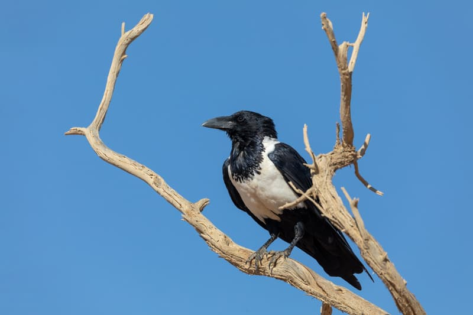
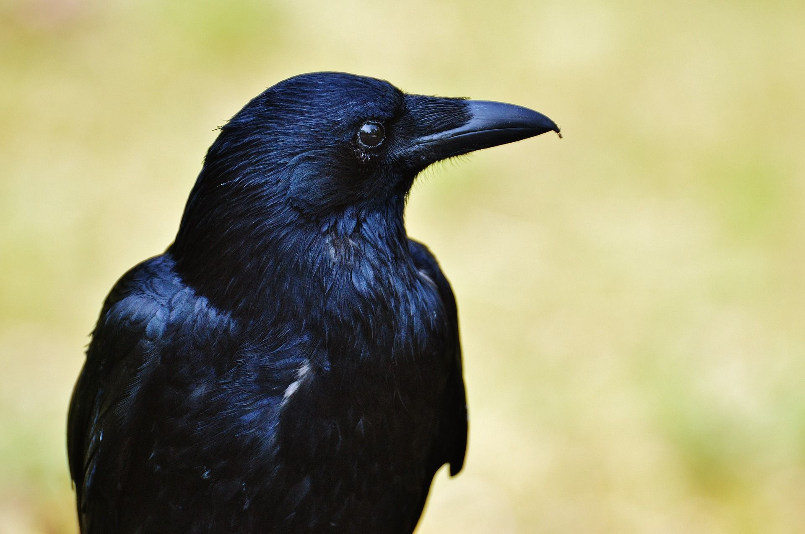
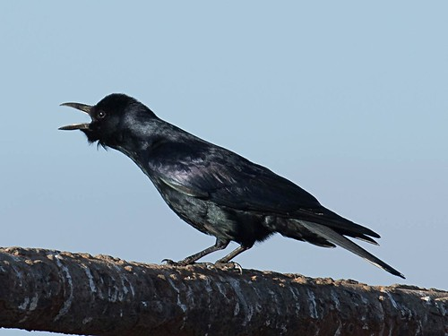

HOME
ABOUT
GALLERY
FORUMS
CONTACT
Crow Gallery
American Crow
EXPLORE NOW
Northwestern Crow
EXPLORE NOW
Fish Crow
EXPLORE NOW
Carrion Crow
EXPLORE NOW
Hooded Crow
EXPLORE NOW
House Crow
EXPLORE NOW
Long Billed Crow
EXPLORE NOW
Large Billed Crow
EXPLORE NOW
Pied Crow
EXPLORE NOW

Torresian Crow
EXPLORE NOW
Hawaiian Crow
EXPLORE NOW
New Caledonian Crow
EXPLORE NOW

White Necked Crow
EXPLORE NOW
Grey Crow
EXPLORE NOW
Piping Crow
EXPLORE NOW
Little Crow
EXPLORE NOW
Cape Crow
EXPLORE NOW
Jamaican Crow
EXPLORE NOW
Sinola Crow
EXPLORE NOW
Palm Crow
EXPLORE NOW
Banggai Crow
EXPLORE NOW
Cuban Crow
EXPLORE NOW
Bougainville Crow
EXPLORE NOW
Eastern Jungle Crow
EXPLORE NOW
Flores Crow
EXPLORE NOW
Bismarck Crow
EXPLORE NOW
Somali Crow
EXPLORE NOW
Tamaulipas Crow
EXPLORE NOW

Mariana Crow
EXPLORE NOW
Voilet Crow
EXPLORE NOW
About Us
Connect with us at any of the following, we would love to have you!
Made by Hunter Koehn